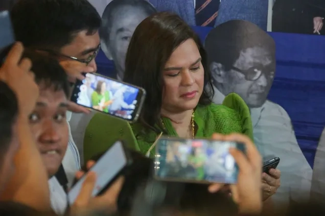

I don’t trust anyone’: Sara Duterte tells AFP not to send security replacements
Published Dec 11, 2024 05:08 PM PHT

MANILA — Vice President Sara Duterte announced she will not accept security replacements from the Armed Forces of the Philippines (AFP) because of trust issues.
The AFP last announced the planned recall of some of her security personnel announced that members of the Vice Presidential Security and Protection Group (VPSPG) would be temporarily replaced with personnel from the AFP and the Philippine National Police (PNP).
Gen. Romeo Brawner Jr., AFP chief, explained then that the temporary replacements were in response to alleged assasination threats made by Duterte against the President, First Lady, and House Speaker during an online briefing on Nov. 23.
Sara Duterte says ‘no plans to hide’ despite ‘unfair’ NBI probe
Duterte said she wrote a letter to Brawner, to tell him not to send replacements for any personnel that would be recalled.
“So kung magtanggal sila, hindi na nila i-replace. Iwan na lang nila yung maiwan and kung wala man maiwan dahil tatanggalin nila lahat,” Duterte said.
(So, if they recall some personnel, they shouldn't send replacements anymore. They should just leave whoever is still there, even if none will be left if they recall everyone)
PRIVATE SECURITY ARRANGEMENTS AN OPTION
The Vice President added that should all her security personnel be withdrawn, she is prepared to seek private security arrangements.
When asked who would fund the alternative arrangements, Duterte said that her husband, lawyer Mans Carpio, has been involved in making the necessary preparations.
“Security is fundamentally a trust and confidence position so it’s difficult to entrust your life to somebody you really do not know and just put there by somebody who you do not trust,” she said.
Pressed on whether she specifically distrusted President Ferdinand Marcos Jr. or Brawner, Duterte responded, “Silang lahat (All of them)... I don’t trust anyone right now except myself.”
DOJ assures VP Sara Duterte of fair probe despite skipping NBI hearing
Published Dec 12, 2024 03:20 PM PHT
MANILA — The Department of Justice said that even if Vice President Sara Duterte skipped a hearing of the National Bureau of Investigation, she could expect a fair evaluation on the supposed threats she made against President Ferdinand Marcos, Jr.
DOJ Undersecretary Jesse Andres said it was “unfortunate” that the Vice President did not show up at the NBI on Wednesday.
“Due process is being afforded her. I do not understand why she does not want to be part of the process which could possibly exculpate her or get her out of criminal liability,” Andres said.
Sara Duterte says ‘no plans to hide’ despite ‘unfair’ NBI probe
He said the Vice President could expect fairness even if a case is filed by the NBI at the DOJ and a preliminary investigation is called by prosecutors.
But Andres cautioned that sending a letter, like the Vice President did at the NBI, was not enough as notarized affidavits are required during preliminary investigations.
“Kapag siya po ay pumasok sa preliminary investigation, kailangan po na ang kanyang mga salaysay ay sinumpaang salaysay so that the statements will be accountable because any statement given under oath which is false is punishable also for perjury and other criminal offenses,” Andres said.
Whether at the NBI or DOJ stage of investigation, Andres assured the Vice President that the rule of law is always upheld.
“Tinitiyak po namin sa Vice President at sa lahat po ng mamamayan na ang Department of Justice po ay magiging patas at matuwid sa kanilang evaluation kung kailangan po mag-file ng kaso o hindi, tingan niyo po ang reporma ng Department of Justice sa loob ng dalawang taon, lahat po ay nakasentro sa karapatang pantao, primacy of human rights, and observance of the rule of law,” Andres said.
Andres reiterated that the investigation of the NBI was also for the security of the Vice President as she also claimed that there were threats to her life, the reason why she made her supposed counter threats against the President, First Lady Liza Araneta-Marcos, and House Speaker Martin Romualdez.
“Tungkulin po ng ating pamahalaan na pangalagaan din ang kaligtasan ng Bise Presidente at kaya po ang NBI ay nagsusumikap na kunin ang statement niya kung ano po yung mga sitwasyon,” Andres said.
Duterte said her statement was taken out of context. She said the "revenge" plot had a specific condition before it could be put into motion: that she had to die first.
She added that her remark "does not constitute to an active threat."
PNP says Marcos command conference not a loyalty check
Published Dec 12, 2024 02:50 PM PHT
MANILA — A police official said that a security command conference led by President Ferdinand Marcos Jr. at Camp Crame on Thursday was not a "loyalty check" amid the political tensions between the leader and Vice President Sara Duterte.
Philippine National Police (PNP) spokesperson BGen. Jean Fajardo said the meeting was not related to the rift between Marcos and Duterte, noting that it had been scheduled long before the recent political drama.
“There’s no need to conduct a loyalty check,” Fajardo said. “Time and again, we keep on saying that the PNP will remain loyal to the Constitution and to our duly constituted authorities.”
‘Buti nang alam nila’: Sara Duterte says no regrets in baring kill plot vs Marcos Jr.
Fajardo said the conference was the third National Peace and Order Council (NPOC) meeting chaired by the President this year.
The discussions focused on concerns for the upcoming 2025 midterm elections, the regional and national peace and order situation, and the investigation of high-profile cases, among others.
Also present at the meeting were Interior Secretary Jonvic Remulla, PNP chief General Rommel Francisco Marbil, and Armed Forces of the Philippines (AFP) Chief of Staff General Romeo Brawner Jr.
brA separate PNP command conference was presided over by Marcos after his meeting with officials from the government’s security cluster.
“Hindi tayo puwedeng maapektuhan ng mga political noise and other bickerings,” Fajardo said.
(We cannot be distracted by political noise or bickering.)
‘It’s anybody’s right’: PNP welcomes VP Sara Duterte’s plan to file complaints vs cops
“At ang PNP po ay nakatutok po sa kanilang mandato po lalong-lalo po ngayon na habang papalapit ang holiday season at after January din, we also expect the conduct ng major events. So, nakatutok po lahat po ang PNP dito sa pagbabantay po ng kaayusan at kapayapaan po sa buong bansa po natin,” she continued.
(The PNP is focused on its mandate, especially with the holiday season approaching. After January, we also anticipate major events that require our full attention to maintain order and peace across the country.)
Public school teachers to receive higher service incentive
Published Dec 12, 2024 02:20 PM PH
MANILA — About a million personnel of the Department of Education are set to benefit from President Ferdinand Marcos Jr.’s directive to increase the Service Recognition Incentive (SRI) for public school teachers and non-teaching personnel.
From P18,000, Marcos Jr has ordered a P2,000 increase on the SRI, according to Education Secretary Sonny Angara.
Angara said that while no exact date on the release had been announced, this could not come at a better time.
“Malaking bagay dahil mag-Papasko, at ilang araw na lang. Ang gusto ng ating Pangulo ay maramdaman nila at kanilang mga paimlya,” he said.
“As soon as the order is issued, mapopondohan na yan, mararamdaman na ng ating mga teachers and DepEd personnel ang mismong iniutos ng ating Pangulo. Nagpapasalamat tayo sa kaniya at kay DBM Secretary Pangandaman.”
DepEd eyes public-private partnerships to address classroom backlogs
Meanwhile, the Education chief says they received feedback from financial institutions in relation to a letter he wrote seeking a moratorium on loan payments of DepEd personnel, especially those affected by the string of typhoons that battered the country recently.
“Yung iba automatic kasi ang deduction nila, so mahihirapan sila. So sana may opt out daw. Kung may gustong mag opt out, kasi yung iba, gusto nilang mag-expire yun para makapag-avail sila ng ibang loan. So far naman, medyo receptive naman sila doon,” Angara said.
Sandiganbayan posts highest case disposition rate in 2024
Published Dec 12, 2024 01:46 PM PHT
MANILA — Anti-graft court Sandiganbayan registered the highest disposition rate of cases of 44 percent with 994 cases disposed of this year, according to the Supreme Court (SC).
Supreme Court to draft governance framework for ‘responsible integration’ of AI in judiciary
In the year-end message of Chief Justice Alexander Gesmundo read by court spokesperson Camille Ting, the Sandiganbayan was closely followed by the lower courts with a disposition rate of 43 percent or disposed of cases totaling 508,197.
Sandiganbayan junks civil cases vs Cojuangco Jr, Enrile, Marcoses
Sandiganbayan upholds decision to acquit Jinggoy Estrada of bribery, indirect bribery
As of November 30, 2024, the Court of Appeals disposed of 14,699 cases, with a case disposition rate of 35 percent.
The Court of Tax Appeals disposed of 648 cases, with a disposition rate of 29 percent.
The Supreme Court for its part disposed of 4,294 cases, with a case disposition rate of 22 percent, as of September 30, 2024.
CJ Gesmundo: AI will benefit individuals who can't afford legal fees
“This year has been a productive one for the Supreme Court,” Gesmundo said in the message read by Ting.
Supreme Court to use AI technology in courts
Gesmundo also thanked the media for the stories about the judiciary.
“Your work helps bridge the often intimidating world of law and justice with the everyday lives of our citizens, and for that, we are deeply grateful,” Gesmundo said.
Watch more on iWantTFC.com. Watch hundreds of Pinoy shows, movies, live sports and news.